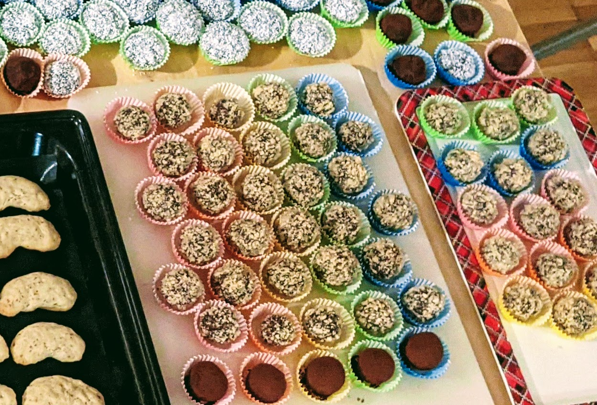

Truffes noix-chocolat

Pour une cinquantaine de truffes :
- 200g de chocolat noir
- 125g de sucre
- 100g de beurre
- 100g de noix mixées
- (facultatif) Un bol de noix, noisettes ou amandes mixées
- Faire fondre le chocolat avec le sucre et un petit peu d'eau dans une casserole.
- Ajouter le beurre en gros morceaux.
- Quand tout est fondu, mettre dans un saladier, mélanger avec le bol de cerneaux mixés, et essayer de faire une bouboule (mais si ça ne marche pas, c'est pas nécessaire d'insister). Laisser reposer une nuit au frais.
- Prendre des bouts de pâte à truffe avec une petite cuillère, les rouler dans ses paumes pour faire des petites boules, et les rouler dans le bol de noix mixées pour que ça soit joli. Quand on commence à avoir du chocolat fondu partout sur les mains et que ça ne roule plus bien, il faut aller se laver les mains et recommencer pour que ça aille mieux.
Remarque : Évidemment, le bol de noix mixées pour faire la garniture peut se remplacer par du chocolat en poudre, du sucre cristal, de la noix de coco râpée…
Retour à la liste des recettes